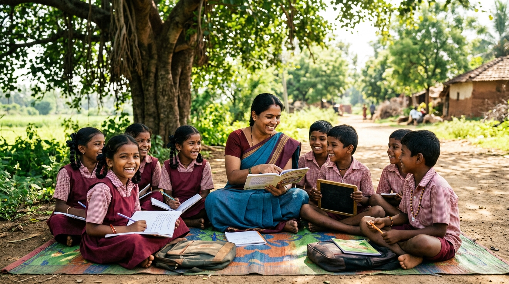
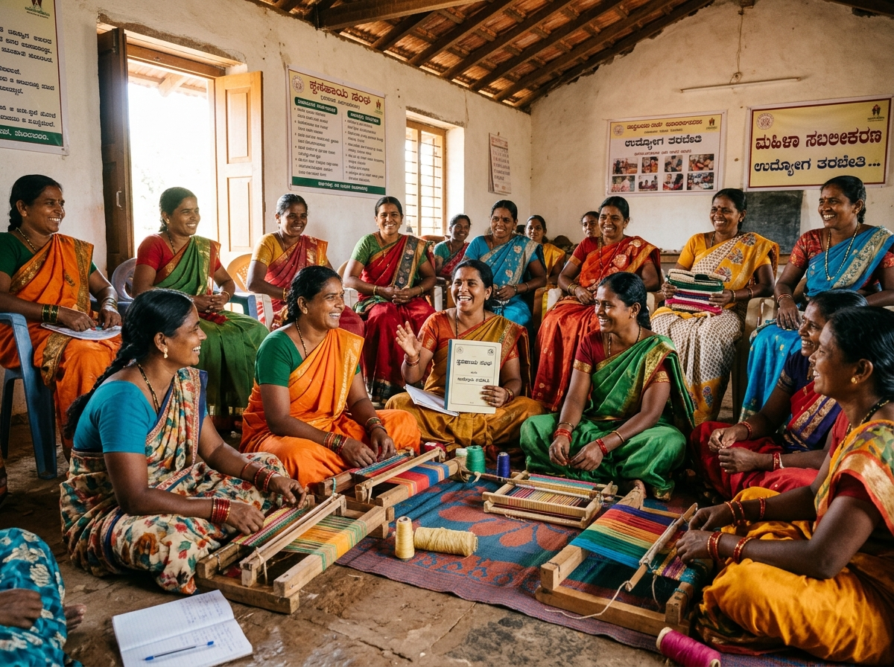
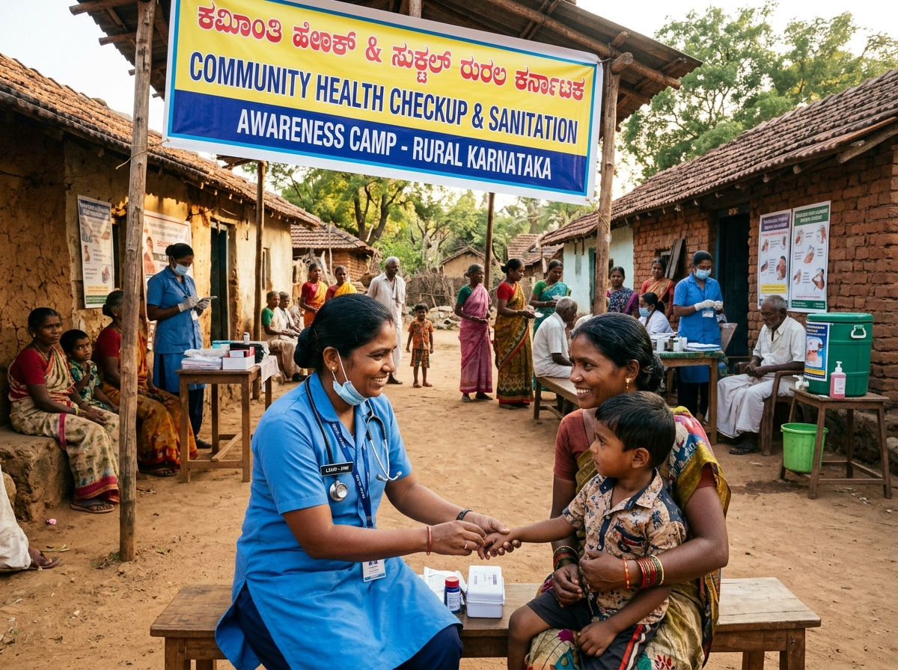

Aligned with the United Nations Convention on the Rights of the Child (UNCRC 1989) and Sustainable Development Goals (SDGs).

Life SkillsTargeted skill enhancement in slums and rural areas, mentoring youth in personal growth, HRD, gender sensitization, and eco-protection.

Rights & SchemesBridging the gap between the government and marginalized families in backward regions like Bidar, Gulbarga, Raichur, Chitradurga, and Davanagere.

Relief & RestorationRapid response and long-term rehabilitation during natural calamities and pandemics, ensuring shelter, livelihoods, and psychosocial restoration.
 Eco Action
Eco Action
Environmental protection, organic farming promotion, and community-driven water conservation in rural Karnataka to combat climate distress.
 Collective Voice
Collective Voice
Lead role in state and national coalitions for effective policy advocacy, child rights defense, and social justice legislation.